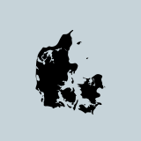
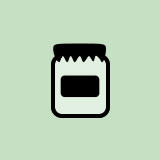

Danes value ecologically friendly products sourced from local Danish suppliers. The Package Free movement empowers your efforts for minimal waste in daily life.
We support this lifestyle with competitively priced, responsible and local goods easily purchased with minimal or reused packaging.
Every visit to Raa is a personal contribution to local producers and a cleaner Denmark.

Local Danish Products

Package-FreeFor Our CommunityWith Passion
Shop Local
Did you know XXX roasts coffee beans right here in Aarhus?
We stock products that support Danish producers.
At RAA, we value staying local while striving to reduce our carbon footprint.
Danish garbage bins are overflowing!
The average Dane generates over two kilos of trash per day.